CODING AGENTS AS PIXEL WORLD MODELS
traex/GPT-6.1-Sol · 0082
点击播放 · 原生 RGB 像素
逐轮保存的候选
回放视频、检查图与代码变化。
每份候选均可单独播放。实际图片检查记录在下方工具轨迹中。
候选 01播放与检查图
点击播放 · 原生 RGB 像素

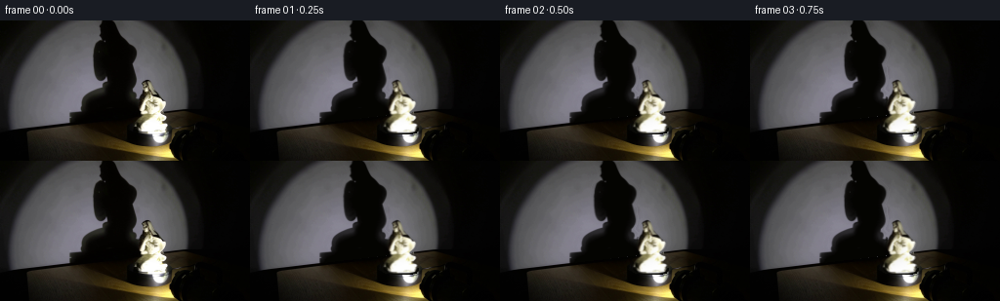
展开代码变化
--- 上一保存版本
+++ 本次保存版本
@@ -0,0 +1,176 @@
+from pathlib import Path
+import numpy as np
+from PIL import Image, ImageDraw
+import cv2
+from scipy.ndimage import gaussian_filter, map_coordinates
+from scipy.interpolate import PchipInterpolator
+import artifact_io
+
+ROOT=Path(__file__).resolve().parent
+I=np.array(Image.open(ROOT/'first_frame.png').convert('RGB'))
+H,W=I.shape[:2]
+S=4
+Y,X=np.mgrid[0:H,0:W].astype(float)
+
+def polygon(points, scale=1):
+ im=Image.new('L',(W*scale,H*scale)); ImageDraw.Draw(im).polygon([(int(x*scale),int(y*scale)) for x,y in points],fill=255)
+ if scale!=1: im=im.resize((W,H),Image.Resampling.LANCZOS)
+ return np.array(im).astype(float)/255
+
+# Traced outlines from the supplied photograph, including the ceramic's veil,
+# tucked arms, bent knee, and ornamental plinth.
+objpoints=[(146,61),(151,60),(154,62),(156,67),(157,71),(160,75),(163,77),(165,80),(169,82),(170,85),(169,89),(166,92),(163,94),(166,97),(170,98),(171,101),(167,104),(168,105),(172,107),(171,111),(169,114),(164,115),(147,115),(140,114),(136,112),(135,110),(136,107),(135,104),(135,101),(138,99),(142,97),(145,96),(140,95),(137,93),(137,89),(139,85),(140,82),(141,79),(143,77),(144,74),(145,73),(145,70),(144,68),(145,66),(144,64)]
+objmask=polygon(objpoints,4)
+shadowpoints=[(103,-4),(115,-4),(120,7),(122,13),(127,18),(134,24),(139,29),(140,34),(138,40),(136,44),(138,50),(139,59),(138,64),(135,69),(137,73),(140,76),(141,80),(144,84),(144,94),(137,98),(126,102),(74,106),(71,105),(71,96),(75,94),(82,93),(82,87),(82,82),(85,78),(90,74),(98,71),(105,68),(109,65),(110,58),(107,60),(104,62),(100,61),(97,56),(95,49),(94,42),(94,33),(96,27),(99,23),(105,20),(104,17),(102,14),(102,10),(101,7),(102,2)]
+shadowpoly=polygon(shadowpoints,4)
+# Fit the smoothly illuminated wall from its unobstructed pixels only.
+wall=Y < (113.0-.115*X)
+exclude=cv2.dilate(((shadowpoly+objmask)>.05).astype(np.uint8),np.ones((7,7),np.uint8))>0
+r=((X-105)/92)**2+((Y-78)/99)**2
+valid=wall & (~exclude) & (r<.82) & (I.mean(2)>50)
+xx=(X-110)/100; yy=(Y-65)/75
+terms=[xx**a*yy**b for a in range(5) for b in range(5-a)]
+T=np.stack(terms,-1)
+coef=np.linalg.lstsq(T[valid],I[valid].astype(float),rcond=None)[0]
+fit=np.clip(T@coef,0,255)
+# All wall reconstruction is restricted to the two original occlusions.
+residual=I.astype(float)-fit
+texres=np.zeros_like(I,dtype=float)
+for c in range(3):
+ texres[:,:,c]=map_coordinates(residual[:,:,c],[Y,np.clip(205-X,5,188)],order=1,mode='nearest')
+texres=np.clip(texres,-2,2)*.45
+fit+=texres
+# Density mask recovers the actual soft, optical edge of the shadow.
+region=cv2.dilate((shadowpoly>.15).astype(np.uint8),np.ones((5,5),np.uint8)).astype(float)
+ratio=(I.astype(float).mean(2)-4)/(fit.mean(2)-4+1e-4)
+sha=np.clip(1-ratio,0,1)*region
+sha=gaussian_filter(sha,.20)
+sha*=wall
+# Mask statue with accurate photographic penumbra.
+om=cv2.GaussianBlur(objmask.astype(np.float32),(0,0),.35)
+# Remove statue from table by ordinary local inpainting.
+inpaint=cv2.inpaint(I,((cv2.dilate((objmask>.02).astype(np.uint8),np.ones((3,3),np.uint8)))*255),5,cv2.INPAINT_TELEA).astype(float)
+base=I.astype(float).copy()
+remove=region*wall
+base=base*(1-remove[...,None])+fit*remove[...,None]
+removeobj=cv2.dilate((om>.02).astype(np.uint8),np.ones((3,3),np.uint8)).astype(float)
+objbg=np.where(wall[:,:,None],fit,inpaint)
+# The newly exposed top of the unchanged circular black turntable.
+disk=((X-152.5)/23.0)**2+((Y-112.7)/6.2)**2 < 1
+objbg[disk & (~wall)]=np.array([9.,9.,6.])
+base=base*(1-removeobj[...,None])+objbg*removeobj[...,None]
+
+# A continuous family of horizontal elliptical sections of the porcelain.
+# Its surface is phototextured solely from the given first frame.
+ys=np.array([60,61,63,65,68,70,73,76,79,82,85,88,91,94,96,98,100,102,104,106,108,111,113,115,116.])
+left=np.array([150,147,144,145,145,145,144,142,140,140,138,137,137,138,143,139,136,135,137,136,135,136,139,143,153.])
+right=np.array([150,152,154,155,156,157,159,162,165,168,170,169,166,163,165,170,170,168,167,171,172,170,169,165,153.])
+cl=(left+right)/2; rad=(right-left)/2
+center=PchipInterpolator(ys,cl,extrapolate=True)
+radius=PchipInterpolator(ys,np.maximum(rad,.15),extrapolate=True)
+# Height-dependent depth preserves the bent seated pose in rotation.
+zcurve=PchipInterpolator([60,72,83,94,103,110,116],[-1.8,-1.2,-.3,1.2,5.0,1.5,0])
+rzcurve=PchipInterpolator([60,65,75,85,95,103,110,116],[.7,.75,.72,.75,.64,.58,.84,1.0])
+
+# Photo texture for the previously unseen reverse of the veil/robe. This is a
+# low-frequency continuation of the ivory material, not an independent asset.
+smooth=gaussian_filter(I.astype(float),sigma=(1.1,1.7,0))
+
+def render_object(theta):
+ yh,xh=np.mgrid[0:H*S,0:W*S].astype(float)
+ xh=(xh+.5)/S-.5; yh=(yh+.5)/S-.5
+ cy=center(yh); rx=np.maximum(radius(yh),.15)
+ rz=rx*rzcurve(np.clip(yh,60,116))
+ zc=zcurve(np.clip(yh,60,116))
+ a=cy-153.5
+ ct,st=np.cos(theta),np.sin(theta)
+ mid=153.5+a*ct-zc*st
+ # Projected ellipse extrema and the front root of its rotated conic.
+ R=np.sqrt((rx*ct)**2+(rz*st)**2)
+ u=(xh-mid)/R
+ q=np.sqrt(np.maximum(0,1-u*u))
+ # A visible surface point is the ellipse x-constrained frontmost point.
+ sinphi=(rx*ct/R)*u+(rz*st/R)*q
+ cosphi=(-rz*st/R)*u+(rx*ct/R)*q
+ sx=cy+rx*sinphi
+ sy=yh.copy()
+ # Gentle vertical parallax with a camera above the horizontal plane.
+ znew=a*st+zc*ct+rx*sinphi*st+rz*cosphi*ct
+ zold=zc+rz*np.sqrt(np.maximum(0,1-sinphi**2))
+ sy=yh+.11*(znew-zold)
+ texture=np.stack([map_coordinates(I[:,:,c].astype(float),[sy,sx],order=1,mode='nearest') for c in range(3)],2)
+ # Extend photo colours around the curved reverse; facial marks stay on
+ # their original front surface and do not repeat on the back.
+ bx=cy+rx*(.50+.12*np.sin(yh*.49))
+ back=np.stack([map_coordinates(smooth[:,:,c],[sy,bx],order=1,mode='nearest') for c in range(3)],2)
+ folds=.94+.065*np.cos(sinphi*11+yh*.12)+.025*np.cos(sinphi*24-yh*.28)
+ back=back*folds[:,:,None]
+ bt=np.clip(-cosphi*3.0,0,1)
+ texture=texture*(1-bt[:,:,None])+back*bt[:,:,None]
+ # Light remains fixed at the front right, so the relief travels through
+ # its highlights rather than carrying painted highlights around with it.
+ nX=sinphi/rx; nZ=cosphi/rz
+ length=np.sqrt(nX*nX+nZ*nZ)
+ nX/=length;nZ/=length
+ nrotX=nX*ct-nZ*st;nrotZ=nX*st+nZ*ct
+ initial_light=np.clip(.64*nX+.77*nZ,0,1)
+ new_light=np.clip(.64*nrotX+.77*nrotZ,0,1)
+ ratio=(.53+.60*new_light)/(.53+.60*initial_light)
+ # Lower porcelain is strongly clipped by the close spotlight.
+ strength=np.clip((114-yh)/24,.1,.64)
+ texture*= (1+strength*(ratio-1))[:,:,None]
+ silhouette=(np.abs(u)<=1)&(yh>=60)&(yh<=115.8)
+ alpha=silhouette.astype(float)
+ # A smoothly sampled original outline is used near t=0, ensuring the
+ # photographic contour evolves continuously into the rotated volume.
+ origalpha=map_coordinates(om,[sy,sx],order=1,mode='constant',cval=0)
+ w=np.exp(-theta*theta/.11)
+ alpha*=1-w+w*origalpha
+ alpha=cv2.GaussianBlur(alpha.astype(np.float32),(0,0),.85)
+ # Resize premultiplied alpha; no coloured fringes against the dark wall.
+ ar=cv2.resize(alpha,(W,H),interpolation=cv2.INTER_AREA)
+ pr=cv2.resize(texture*alpha[:,:,None],(W,H),interpolation=cv2.INTER_AREA)
+ return pr,ar
+
+# The wall is viewed from the camera, but the shadow sees the sculpture
+# from the offset, lower-right point source. Optical enlargement is twofold.
+shadow_c=np.zeros(H); shadow_r=np.ones(H)
+for y in range(H):
+ coords=np.where(sha[y]>.35)[0]
+ if len(coords):
+ shadow_c[y]=(coords.min()+coords.max())/2
+ shadow_r[y]=max((coords.max()-coords.min())/2,1)
+ else:shadow_c[y]=115
+shadow_c=gaussian_filter(shadow_c,1.2)
+shadow_r=gaussian_filter(shadow_r,1.2)
+
+def render_shadow(theta):
+ h_obj=np.clip((Y+124)/2,60,115.5)
+ cc=center(h_obj)-153.5; zz=zcurve(h_obj)
+ drift=2.0*(cc*(np.cos(theta)-1)-zz*np.sin(theta))
+ dep=rzcurve(h_obj)
+ off=.48
+ k=np.sqrt(np.cos(theta+off)**2+dep**2*np.sin(theta+off)**2)/np.sqrt(np.cos(off)**2+dep**2*np.sin(off)**2)
+ # Stationary round pedestal and the wall-table intersection.
+ wt=np.clip((101-Y)/8,0,1)
+ drift*=wt;k=1+(k-1)*wt
+ cx=shadow_c[np.clip(Y.astype(int),0,H-1)]
+ sx=cx+(X-cx-drift)/k
+ a=map_coordinates(sha,[Y,sx],order=1,mode='constant',cval=0)
+ a=gaussian_filter(a,.26)
+ return a*wall
+
+frames=[I.copy()]
+for t in range(1,20):
+ theta=np.deg2rad(t*3.5) # 14 deg/s, clockwise as viewed from above.
+ sh=render_shadow(theta)
+ out=base*(1-sh[:,:,None])+np.array([4.0,3.5,1.4])*sh[:,:,None]
+ prem,al=render_object(theta)
+ out=out*(1-al[:,:,None])+prem
+ frames.append(np.clip(np.round(out),0,255).astype(np.uint8))
+frames=np.stack(frames)
+artifact_io.save(frames,ROOT)
+# Inspection enlargements remain local to this workspace.
+Image.fromarray(frames[1]).resize((1024,576)).save(ROOT/'.tmp/frame1.png')
+Image.fromarray(frames[10]).resize((1024,576)).save(ROOT/'.tmp/frame10.png')
+Image.fromarray(frames[19]).resize((1024,576)).save(ROOT/'.tmp/frame19.png')
候选 02播放与检查图
点击播放 · 原生 RGB 像素
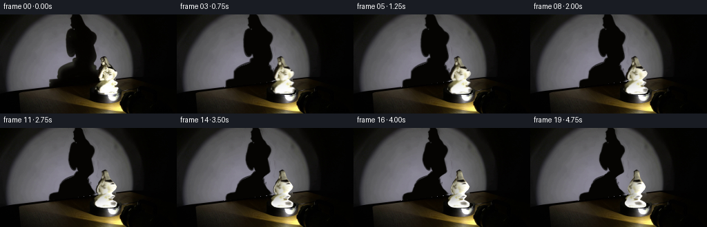
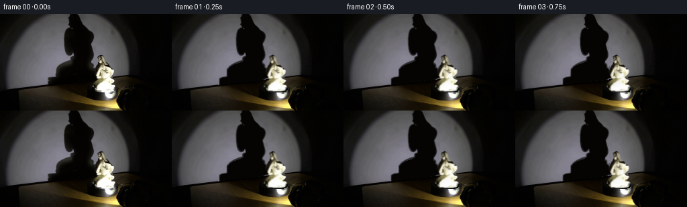
展开代码变化
--- 上一保存版本
+++ 本次保存版本
@@ -2,7 +2,7 @@
import numpy as np
from PIL import Image, ImageDraw
import cv2
-from scipy.ndimage import gaussian_filter, map_coordinates
+from scipy.ndimage import gaussian_filter, map_coordinates, distance_transform_edt
from scipy.interpolate import PchipInterpolator
import artifact_io
@@ -44,7 +44,14 @@
region=cv2.dilate((shadowpoly>.15).astype(np.uint8),np.ones((5,5),np.uint8)).astype(float)
ratio=(I.astype(float).mean(2)-4)/(fit.mean(2)-4+1e-4)
sha=np.clip(1-ratio,0,1)*region
-sha=gaussian_filter(sha,.20)
+# Restore the occluded right edge of the shadow behind the statue, and
+# eliminate tiny highlight contaminants inside the opaque silhouette.
+geom=cv2.GaussianBlur(shadowpoly.astype(np.float32),(0,0),.65)
+blend=np.clip((Y-75)/8,0,1)
+sha=sha*(1-blend)+geom*blend
+interior=cv2.erode((sha>.7).astype(np.uint8),np.ones((3,3),np.uint8))>0
+sha[interior]=.993
+sha=gaussian_filter(sha,.28)
sha*=wall
# Mask statue with accurate photographic penumbra.
om=cv2.GaussianBlur(objmask.astype(np.float32),(0,0),.35)
@@ -74,7 +81,13 @@
# Photo texture for the previously unseen reverse of the veil/robe. This is a
# low-frequency continuation of the ivory material, not an independent asset.
-smooth=gaussian_filter(I.astype(float),sigma=(1.1,1.7,0))
+# Colour dilation is restricted to source pixels within the statue. It
+# prevents old background pixels from turning into dark ceramic markings.
+inner=om>.92
+idx=distance_transform_edt(~inner,return_distances=False,return_indices=True)
+ceramic=I[idx[0],idx[1]].astype(float)
+ceramic[inner]=I[inner]
+smooth=gaussian_filter(ceramic,sigma=(1.1,1.7,0))
def render_object(theta):
yh,xh=np.mgrid[0:H*S,0:W*S].astype(float)
@@ -98,7 +111,7 @@
znew=a*st+zc*ct+rx*sinphi*st+rz*cosphi*ct
zold=zc+rz*np.sqrt(np.maximum(0,1-sinphi**2))
sy=yh+.11*(znew-zold)
- texture=np.stack([map_coordinates(I[:,:,c].astype(float),[sy,sx],order=1,mode='nearest') for c in range(3)],2)
+ texture=np.stack([map_coordinates(ceramic[:,:,c],[sy,sx],order=1,mode='nearest') for c in range(3)],2)
# Extend photo colours around the curved reverse; facial marks stay on
# their original front surface and do not repeat on the back.
bx=cy+rx*(.50+.12*np.sin(yh*.49))
@@ -147,7 +160,7 @@
def render_shadow(theta):
h_obj=np.clip((Y+124)/2,60,115.5)
cc=center(h_obj)-153.5; zz=zcurve(h_obj)
- drift=2.0*(cc*(np.cos(theta)-1)-zz*np.sin(theta))
+ drift=1.5*(cc*(np.cos(theta)-1)-zz*np.sin(theta))
dep=rzcurve(h_obj)
off=.48
k=np.sqrt(np.cos(theta+off)**2+dep**2*np.sin(theta+off)**2)/np.sqrt(np.cos(off)**2+dep**2*np.sin(off)**2)
候选 03播放与检查图
点击播放 · 原生 RGB 像素
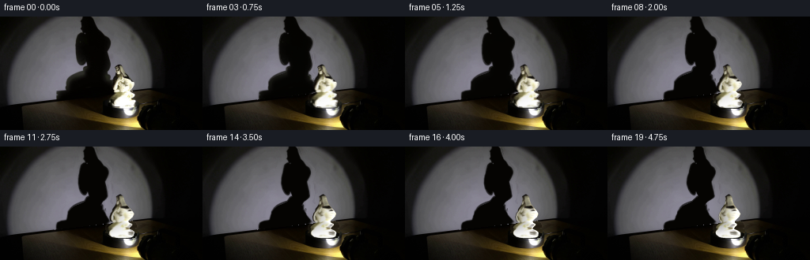
展开代码变化
--- 上一保存版本
+++ 本次保存版本
@@ -19,7 +19,7 @@
# Traced outlines from the supplied photograph, including the ceramic's veil,
# tucked arms, bent knee, and ornamental plinth.
-objpoints=[(146,61),(151,60),(154,62),(156,67),(157,71),(160,75),(163,77),(165,80),(169,82),(170,85),(169,89),(166,92),(163,94),(166,97),(170,98),(171,101),(167,104),(168,105),(172,107),(171,111),(169,114),(164,115),(147,115),(140,114),(136,112),(135,110),(136,107),(135,104),(135,101),(138,99),(142,97),(145,96),(140,95),(137,93),(137,89),(139,85),(140,82),(141,79),(143,77),(144,74),(145,73),(145,70),(144,68),(145,66),(144,64)]
+objpoints=[(146,61),(151,60),(154,62),(156,67),(157,71),(160,75),(163,77),(165,80),(169,82),(170,85),(169,89),(166,92),(163,94),(166,97),(170,98),(171,101),(167,104),(168,105),(172,107),(171,111),(169,114),(164,115),(147,115),(140,114),(136,112),(135,110),(136,107),(135,104),(135,101),(138,99),(142,97),(145,96),(140,95),(137,93),(137,89),(139,85),(140,82),(139,79),(141,76),(144,74),(145,73),(145,70),(144,68),(145,66),(144,64)]
objmask=polygon(objpoints,4)
shadowpoints=[(103,-4),(115,-4),(120,7),(122,13),(127,18),(134,24),(139,29),(140,34),(138,40),(136,44),(138,50),(139,59),(138,64),(135,69),(137,73),(140,76),(141,80),(144,84),(144,94),(137,98),(126,102),(74,106),(71,105),(71,96),(75,94),(82,93),(82,87),(82,82),(85,78),(90,74),(98,71),(105,68),(109,65),(110,58),(107,60),(104,62),(100,61),(97,56),(95,49),(94,42),(94,33),(96,27),(99,23),(105,20),(104,17),(102,14),(102,10),(101,7),(102,2)]
shadowpoly=polygon(shadowpoints,4)
@@ -64,6 +64,10 @@
objbg=np.where(wall[:,:,None],fit,inpaint)
# The newly exposed top of the unchanged circular black turntable.
disk=((X-152.5)/23.0)**2+((Y-112.7)/6.2)**2 < 1
+tablepatch=(removeobj>.5)&(~wall)&(~disk)
+wood=I[np.clip(Y.astype(int),0,H-1),np.full((H,W),179)].astype(float)
+wood*=np.clip(.57+.01*(X-132),.45,1.05)[:,:,None]
+objbg[tablepatch]=wood[tablepatch]
objbg[disk & (~wall)]=np.array([9.,9.,6.])
base=base*(1-removeobj[...,None])+objbg*removeobj[...,None]
@@ -173,13 +177,20 @@
a=gaussian_filter(a,.26)
return a*wall
+initial_shadow=render_shadow(0.)
+initial_prem,initial_alpha=render_object(0.)
+initial=base*(1-initial_shadow[:,:,None])+np.array([4.,3.5,1.4])*initial_shadow[:,:,None]
+initial=initial*(1-initial_alpha[:,:,None])+initial_prem
+# Retain the source's photographic optical response at the initial pose.
+initial_residual=I.astype(float)-initial
frames=[I.copy()]
for t in range(1,20):
- theta=np.deg2rad(t*3.5) # 14 deg/s, clockwise as viewed from above.
+ theta=np.deg2rad(t*3.0) # 12 deg/s, clockwise as viewed from above.
sh=render_shadow(theta)
out=base*(1-sh[:,:,None])+np.array([4.0,3.5,1.4])*sh[:,:,None]
prem,al=render_object(theta)
out=out*(1-al[:,:,None])+prem
+ out+=initial_residual*np.exp(-theta**2/.035)
frames.append(np.clip(np.round(out),0,255).astype(np.uint8))
frames=np.stack(frames)
artifact_io.save(frames,ROOT)
候选 04播放与检查图
点击播放 · 原生 RGB 像素

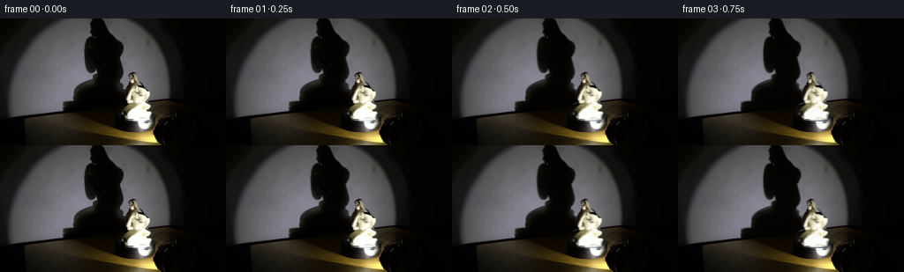
展开代码变化
--- 上一保存版本 +++ 本次保存版本 @@ -60,14 +60,15 @@ base=I.astype(float).copy() remove=region*wall base=base*(1-remove[...,None])+fit*remove[...,None] -removeobj=cv2.dilate((om>.02).astype(np.uint8),np.ones((3,3),np.uint8)).astype(float) +removeobj=cv2.GaussianBlur(cv2.dilate((om>.02).astype(np.uint8),np.ones((5,5),np.uint8)).astype(np.float32),(0,0),.7) objbg=np.where(wall[:,:,None],fit,inpaint) # The newly exposed top of the unchanged circular black turntable. disk=((X-152.5)/23.0)**2+((Y-112.7)/6.2)**2 < 1 tablepatch=(removeobj>.5)&(~wall)&(~disk) wood=I[np.clip(Y.astype(int),0,H-1),np.full((H,W),179)].astype(float) -wood*=np.clip(.57+.01*(X-132),.45,1.05)[:,:,None] -objbg[tablepatch]=wood[tablepatch] +wood*=np.clip(.69+.009*(X-146),.45,1.05)[:,:,None] +woodweight=cv2.GaussianBlur(tablepatch.astype(np.float32),(0,0),1.1) +objbg=objbg*(1-woodweight[:,:,None])+wood*woodweight[:,:,None] objbg[disk & (~wall)]=np.array([9.,9.,6.]) base=base*(1-removeobj[...,None])+objbg*removeobj[...,None]
可观测工具轨迹
实际执行的命令与返回图片。
命令 1exit 0
/bin/bash -lc 'ls -la && cat prompt.txt && cat GENERATION_RULES.md'
命令 2exit 0
/bin/bash -lc "cat artifact_io.py && python - <<'PY'
from PIL import Image
im=Image.open('first_frame.png'); print(im.size);im.resize((1024,576)).save('.tmp/enlarged.png')
PY"命令 3exit 0
/bin/bash -lc "python - <<'PY'
import numpy as np
from PIL import Image
im=Image.open('first_frame.png')
im.crop((125,52,184,133)).resize((472,648)).save('.tmp/statue.png')
im.crop((67,0,145,109)).resize((468,654)).save('.tmp/shadow.png')
PY"命令 4exit 0
/bin/bash -lc "python - <<'PY'
from PIL import Image,ImageDraw
im=Image.open('first_frame.png').resize((1536,864),Image.Resampling.NEAREST)
d=ImageDraw.Draw(im)
for x in range(60,191,10):
d.line((x*6,0,x*6,864),fill=(120,100,100),width=1); d.text((x*6,320),str(x),fill='red')
for y in range(0,130,10):
d.line((60*6,y*6,190*6,y*6),fill=(120,100,100),width=1);d.text((120*6,y*6),str(y),fill='red')
im.save('.tmp/grid.png')
PY"命令 5exit 0
/bin/bash -lc "python - <<'PY'
from PIL import Image,ImageDraw
im=Image.open('first_frame.png').crop((130,55,180,122)).resize((600,804),Image.Resampling.NEAREST)
d=ImageDraw.Draw(im)
for x in range(130,181,5):
d.line(((x-130)*12,0,(x-130)*12,804),fill=(80,50,30));d.text(((x-130)*12,0),str(x),fill='red')
for y in range(55,123,5):
d.line((0,(y-55)*12,600,(y-55)*12),fill=(80,50,30));d.text((0,(y-55)*12),str(y),fill='red')
im.save('.tmp/statue_grid.png')
PY"命令 6exit 0
/bin/bash -lc "python - <<'PY'
import numpy as np
from PIL import Image
I=np.array(Image.open('first_frame.png'))
for y in [0,20,40,60,80,100]:
print(y,[(x,tuple(I[y,x])) for x in [10,20,40,60,80,100,120,140,160,180,190,210]])
import importlib.util
for m in ['cv2','scipy','numba']: print(m,importlib.util.find_spec(m))
PY"命令 7exit 0
/bin/bash -lc "cat > generate.py <<'PY'
from pathlib import Path
import numpy as np
from PIL import Image, ImageDraw
import cv2
from scipy.ndimage import gaussian_filter, map_coordinates
from scipy.interpolate import PchipInterpolator
import artifact_io
ROOT=Path(__file__).resolve().parent
I=np.array(Image.open(ROOT/'first_frame.png').convert('RGB'))
H,W=I.shape[:2]
S=4
Y,X=np.mgrid[0:H,0:W].astype(float)
def polygon(points, scale=1):
im=Image.new('L',(W*scale,H*scale)); ImageDraw.Draw(im).polygon([(int(x*scale),int(y*scale)) for x,y in points],fill=255)
if scale"'!=1: im=im.resize((W,H),Image.Resampling.LANCZOS)
return np.array(im).astype(float)/255
# Traced outlines from the supplied photograph, including the ceramic'"'s veil,
# tucked arms, bent knee, and ornamental plinth.
objpoints=[(146,61),(151,60),(154,62),(156,67),(157,71),(160,75),(163,77),(165,80),(169,82),(170,85),(169,89),(166,92),(163,94),(166,97),(170,98),(171,101),(167,104),(168,105),(172,107),(171,111),(169,114),(164,115),(147,115),(140,114),(136,112),(135,110),(136,107),(135,104),(135,101),(138,99),(142,97),(145,96),(140,95),(137,93),(137,89),(139,85),(140,82),(141,79),(143,77),(144,74),(145,73),(145,70),(144,68),(145,66),(144,64)]
objmask=polygon(objpoints,4)
shadowpoints=[(103,-4),(115,-4),(120,7),(122,13),(127,18),(134,24),(139,29),(140,34),(138,40),(136,44),(138,50),(139,59),(138,64),(135,69),(137,73),(140,76),(141,80),(144,84),(144,94),(137,98),(126,102),(74,106),(71,105),(71,96),(75,94),(82,93),(82,87),(82,82),(85,78),(90,74),(98,71),(105,68),(109,65),(110,58),(107,60),(104,62),(100,61),(97,56),(95,49),(94,42),(94,33),(96,27),(99,23),(105,20),(104,17),(102,14),(102,10),(101,7),(102,2)]
shadowpoly=polygon(shadowpoints,4)
# Fit the smoothly illuminated wall from its unobstructed pixels only.
wall=Y < (113.0-.115*X)
exclude=cv2.dilate(((shadowpoly+objmask)>.05).astype(np.uint8),np.ones((7,7),np.uint8))>0
r=((X-105)/92)**2+((Y-78)/99)**2
valid=wall & (~exclude) & (r<.82) & (I.mean(2)>50)
xx=(X-110)/100; yy=(Y-65)/75
terms=[xx**a*yy**b for a in range(5) for b in range(5-a)]
T=np.stack(terms,-1)
coef=np.linalg.lstsq(T[valid],I[valid].astype(float),rcond=None)[0]
fit=np.clip(T@coef,0,255)
# All wall reconstruction is restricted to the two original occlusions.
residual=I.astype(float)-fit
texres=np.zeros_like(I,dtype=float)
for c in range(3):
texres[:,:,c]=map_coordinates(residual[:,:,c],[Y,np.clip(205-X,5,188)],order=1,mode='nearest')
texres=np.clip(texres,-2,2)*.45
fit+=texres
# Density mask recovers the actual soft, optical edge of the shadow.
region=cv2.dilate((shadowpoly>.15).astype(np.uint8),np.ones((5,5),np.uint8)).astype(float)
ratio=(I.astype(float).mean(2)-4)/(fit.mean(2)-4+1e-4)
sha=np.clip(1-ratio,0,1)*region
sha=gaussian_filter(sha,.20)
sha*=wall
# Mask statue with accurate photographic penumbra.
om=cv2.GaussianBlur(objmask.astype(np.float32),(0,0),.35)
# Remove statue from table by ordinary local inpainting.
inpaint=cv2.inpaint(I,((cv2.dilate((objmask>.02).astype(np.uint8),np.ones((3,3),np.uint8)))*255),5,cv2.INPAINT_TELEA).astype(float)
base=I.astype(float).copy()
remove=region*wall
base=base*(1-remove[...,None])+fit*remove[...,None]
removeobj=cv2.dilate((om>.02).astype(np.uint8),np.ones((3,3),np.uint8)).astype(float)
objbg=np.where(wall[:,:,None],fit,inpaint)
# The newly exposed top of the unchanged circular black turntable.
disk=((X-152.5)/23.0)**2+((Y-112.7)/6.2)**2 < 1
objbg[disk & (~wall)]=np.array([9.,9.,6.])
base=base*(1-removeobj[...,None])+objbg*removeobj[...,None]
# A continuous family of horizontal elliptical sections of the porcelain.
# Its surface is phototextured solely from the given first frame.
ys=np.array([60,61,63,65,68,70,73,76,79,82,85,88,91,94,96,98,100,102,104,106,108,111,113,115,116.])
left=np.array([150,147,144,145,145,145,144,142,140,140,138,137,137,138,143,139,136,135,137,136,135,136,139,143,153.])
right=np.array([150,152,154,155,156,157,159,162,165,168,170,169,166,163,165,170,170,168,167,171,172,170,169,165,153.])
cl=(left+right)/2; rad=(right-left)/2
center=PchipInterpolator(ys,cl,extrapolate=True)
radius=PchipInterpolator(ys,np.maximum(rad,.15),extrapolate=True)
# Height-dependent depth preserves the bent seated pose in rotation.
zcurve=PchipInterpolator([60,72,83,94,103,110,116],[-1.8,-1.2,-.3,1.2,5.0,1.5,0])
rzcurve=PchipInterpolator([60,65,75,85,95,103,110,116],[.7,.75,.72,.75,.64,.58,.84,1.0])
# Photo texture for the previously unseen reverse of the veil/robe. This is a
# low-frequency continuation of the ivory material, not an independent asset.
smooth=gaussian_filter(I.astype(float),sigma=(1.1,1.7,0))
def render_object(theta):
yh,xh=np.mgrid[0:H*S,0:W*S].astype(float)
xh=(xh+.5)/S-.5; yh=(yh+.5)/S-.5
cy=center(yh); rx=np.maximum(radius(yh),.15)
rz=rx*rzcurve(np.clip(yh,60,116))
zc=zcurve(np.clip(yh,60,116))
a=cy-153.5
ct,st=np.cos(theta),np.sin(theta)
mid=153.5+a*ct-zc*st
# Projected ellipse extrema and the front root of its rotated conic.
R=np.sqrt((rx*ct)**2+(rz*st)**2)
u=(xh-mid)/R
q=np.sqrt(np.maximum(0,1-u*u))
# A visible surface point is the ellipse x-constrained frontmost point.
sinphi=(rx*ct/R)*u+(rz*st/R)*q
cosphi=(-rz*st/R)*u+(rx*ct/R)*q
sx=cy+rx*sinphi
sy=yh.copy()
# Gentle vertical parallax with a camera above the horizontal plane.
znew=a*st+zc*ct+rx*sinphi*st+rz*cosphi*ct
zold=zc+rz*np.sqrt(np.maximum(0,1-sinphi**2))
sy=yh+.11*(znew-zold)
texture=np.stack([map_coordinates(I[:,:,c].astype(float),[sy,sx],order=1,mode='nearest') for c in range(3)],2)
# Extend photo colours around the curved reverse; facial marks stay on
# their original front surface and do not repeat on the back.
bx=cy+rx*(.50+.12*np.sin(yh*.49))
back=np.stack([map_coordinates(smooth[:,:,c],[sy,bx],order=1,mode='nearest') for c in range(3)],2)
folds=.94+.065*np.cos(sinphi*11+yh*.12)+.025*np.cos(sinphi*24-yh*.28)
back=back*folds[:,:,None]
bt=np.clip(-cosphi*3.0,0,1)
texture=texture*(1-bt[:,:,None])+back*bt[:,:,None]
# Light remains fixed at the front right, so the relief travels through
# its highlights rather than carrying painted highlights around with it.
nX=sinphi/rx; nZ=cosphi/rz
length=np.sqrt(nX*nX+nZ*nZ)
nX/=length;nZ/=length
nrotX=nX*ct-nZ*st;nrotZ=nX*st+nZ*ct
initial_light=np.clip(.64*nX+.77*nZ,0,1)
new_light=np.clip(.64*nrotX+.77*nrotZ,0,1)
ratio=(.53+.60*new_light)/(.53+.60*initial_light)
# Lower porcelain is strongly clipped by the close spotlight.
strength=np.clip((114-yh)/24,.1,.64)
texture*= (1+strength*(ratio-1))[:,:,None]
silhouette=(np.abs(u)<=1)&(yh>=60)&(yh<=115.8)
alpha=silhouette.astype(float)
# A smoothly sampled original outline is used near t=0, ensuring the
# photographic contour evolves continuously into the rotated volume.
origalpha=map_coordinates(om,[sy,sx],order=1,mode='constant',cval=0)
w=np.exp(-theta*theta/.11)
alpha*=1-w+w*origalpha
alpha=cv2.GaussianBlur(alpha.astype(np.float32),(0,0),.85)
# Resize premultiplied alpha; no coloured fringes against the dark wall.
ar=cv2.resize(alpha,(W,H),interpolation=cv2.INTER_AREA)
pr=cv2.resize(texture*alpha[:,:,None],(W,H),interpolation=cv2.INTER_AREA)
return pr,ar
# The wall is viewed from the camera, but the shadow sees the sculpture
# from the offset, lower-right point source. Optical enlargement is twofold.
shadow_c=np.zeros(H); shadow_r=np.ones(H)
for y in range(H):
coords=np.where(sha[y]>.35)[0]
if len(coords):
shadow_c[y]=(coords.min()+coords.max())/2
shadow_r[y]=max((coords.max()-coords.min())/2,1)
else:shadow_c[y]=115
shadow_c=gaussian_filter(shadow_c,1.2)
shadow_r=gaussian_filter(shadow_r,1.2)
def render_shadow(theta):
h_obj=np.clip((Y+124)/2,60,115.5)
cc=center(h_obj)-153.5; zz=zcurve(h_obj)
drift=2.0*(cc*(np.cos(theta)-1)-zz*np.sin(theta))
dep=rzcurve(h_obj)
off=.48
k=np.sqrt(np.cos(theta+off)**2+dep**2*np.sin(theta+off)**2)/np.sqrt(np.cos(off)**2+dep**2*np.sin(off)**2)
# Stationary round pedestal and the wall-table intersection.
wt=np.clip((101-Y)/8,0,1)
drift*=wt;k=1+(k-1)*wt
cx=shadow_c[np.clip(Y.astype(int),0,H-1)]
sx=cx+(X-cx-drift)/k
a=map_coordinates(sha,[Y,sx],order=1,mode='constant',cval=0)
a=gaussian_filter(a,.26)
return a*wall
frames=[I.copy()]
for t in range(1,20):
theta=np.deg2rad(t*3.5) # 14 deg/s, clockwise as viewed from above.
sh=render_shadow(theta)
out=base*(1-sh[:,:,None])+np.array([4.0,3.5,1.4])*sh[:,:,None]
prem,al=render_object(theta)
out=out*(1-al[:,:,None])+prem
frames.append(np.clip(np.round(out),0,255).astype(np.uint8))
frames=np.stack(frames)
artifact_io.save(frames,ROOT)
# Inspection enlargements remain local to this workspace.
Image.fromarray(frames[1]).resize((1024,576)).save(ROOT/'.tmp/frame1.png')
Image.fromarray(frames[10]).resize((1024,576)).save(ROOT/'.tmp/frame10.png')
Image.fromarray(frames[19]).resize((1024,576)).save(ROOT/'.tmp/frame19.png')
PY
python generate.py"命令 8exit 0
/bin/bash -lc "python - <<'PY'
exec(open('generate.py').read().split('frames=[I.copy()]')[0])
Image.fromarray(np.uint8(np.clip(base,0,255))).resize((1024,576)).save('.tmp/base.png')
Image.fromarray(np.uint8(sha*255)).resize((1024,576)).save('.tmp/sha.png')
Image.fromarray(np.uint8(om*255)).resize((1024,576)).save('.tmp/om.png')
PY"命令 9exit 0
/bin/bash -lc "python - <<'PY'
p='generate.py'
s=open(p).read().replace('from scipy.ndimage import gaussian_filter, map_coordinates','from scipy.ndimage import gaussian_filter, map_coordinates, distance_transform_edt')
s=s.replace(\"sha=gaussian_filter(sha,.20)\\nsha*=wall\", \"\"\"# Restore the occluded right edge of the shadow behind the statue, and
# eliminate tiny highlight contaminants inside the opaque silhouette.
geom=cv2.GaussianBlur(shadowpoly.astype(np.float32),(0,0),.65)
blend=np.clip((Y-75)/8,0,1)
sha=sha*(1-blend)+geom*blend
interior=cv2.erode((sha>.7).astype(np.uint8),np.ones((3,3),np.uint8))>0
sha[interior]=.993
sha=gaussian_filter(sha,.28)
sha*=wall\"\"\")
s=s.replace(\"smooth=gaussian_filter(I.astype(float),sigma=(1.1,1.7,0))\", \"\"\"# Colour dilation is restricted to source pixels within the statue. It
# prevents old background pixels from turning into dark ceramic markings.
inner=om>.92
idx=distance_transform_edt(~inner,return_distances=False,return_indices=True)
ceramic=I[idx[0],idx[1]].astype(float)
ceramic[inner]=I[inner]
smooth=gaussian_filter(ceramic,sigma=(1.1,1.7,0))\"\"\")
s=s.replace(\"map_coordinates(I[:,:,c].astype(float),[sy,sx]\", \"map_coordinates(ceramic[:,:,c],[sy,sx]\")
s=s.replace(\"drift=2.0*\", \"drift=1.5*\")
# More gradual section/parallax start, keep matte contours.
s=s.replace('alpha*=1-w+w*origalpha','alpha*=1-w+w*origalpha')
open(p,'w').write(s)
PY
python generate.py"命令 10exit 0
/bin/bash -lc "python - <<'PY'
p='generate.py';s=open(p).read()
s=s.replace('(141,79),(143,77),(144,74)', '(139,79),(141,76),(144,74)')
s=s.replace(\"objbg[disk & (~wall)]=np.array([9.,9.,6.])\", \"\"\"tablepatch=(removeobj>.5)&(~wall)&(~disk)
wood=I[np.clip(Y.astype(int),0,H-1),np.full((H,W),179)].astype(float)
wood*=np.clip(.57+.01*(X-132),.45,1.05)[:,:,None]
objbg[tablepatch]=wood[tablepatch]
objbg[disk & (~wall)]=np.array([9.,9.,6.])\"\"\")
s=s.replace(\"frames=[I.copy()]\\nfor t\", \"\"\"initial_shadow=render_shadow(0.)
initial_prem,initial_alpha=render_object(0.)
initial=base*(1-initial_shadow[:,:,None])+np.array([4.,3.5,1.4])*initial_shadow[:,:,None]
initial=initial*(1-initial_alpha[:,:,None])+initial_prem
# Retain the source's photographic optical response at the initial pose.
initial_residual=I.astype(float)-initial
frames=[I.copy()]
for t\"\"\")
s=s.replace(\"np.deg2rad(t*3.5) # 14 deg/s\", \"np.deg2rad(t*3.0) # 12 deg/s\")
s=s.replace(\"out=out*(1-al[:,:,None])+prem\\n frames\", \"out=out*(1-al[:,:,None])+prem\\n out+=initial_residual*np.exp(-theta**2/.035)\\n frames\")
open(p,'w').write(s)
PY
python generate.py"命令 11exit 0
/bin/bash -lc "python - <<'PY'
p='generate.py';s=open(p).read()
s=s.replace('removeobj=cv2.dilate((om>.02).astype(np.uint8),np.ones((3,3),np.uint8)).astype(float)', 'removeobj=cv2.GaussianBlur(cv2.dilate((om>.02).astype(np.uint8),np.ones((5,5),np.uint8)).astype(np.float32),(0,0),.7)')
s=s.replace(\"wood*=np.clip(.57+.01*(X-132),.45,1.05)[:,:,None]\", \"wood*=np.clip(.69+.009*(X-146),.45,1.05)[:,:,None]\")
s=s.replace(\"objbg[tablepatch]=wood[tablepatch]\", \"\"\"woodweight=cv2.GaussianBlur(tablepatch.astype(np.float32),(0,0),1.1)
objbg=objbg*(1-woodweight[:,:,None])+wood*woodweight[:,:,None]\"\"\")
open(p,'w').write(s)
PY
python generate.py
python - <<'PY'
from PIL import Image
import numpy as np
p=np.load('pixels.npz')['pixels']; a=np.array(Image.open('first_frame.png').convert('RGB'))
r=np.stack([(p[:,:,0]>>16)&255,(p[:,:,0]>>8)&255,p[:,:,0]&255],axis=-1).astype('uint8')
assert np.array_equal(a,r)
assert p.shape==(144,256,20)
print('Validated: 20 RGB frames, 256x144, first frame identical.')
PY"视觉工具实际返回图片 1
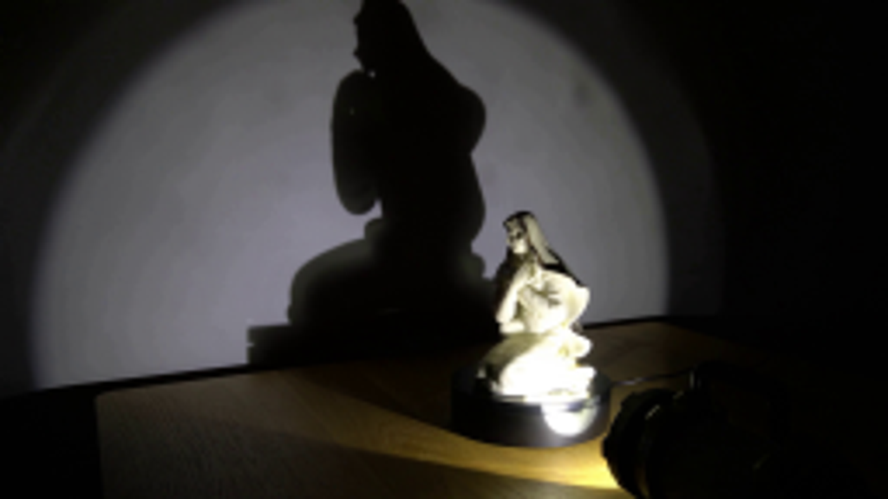
视觉工具实际返回图片 2
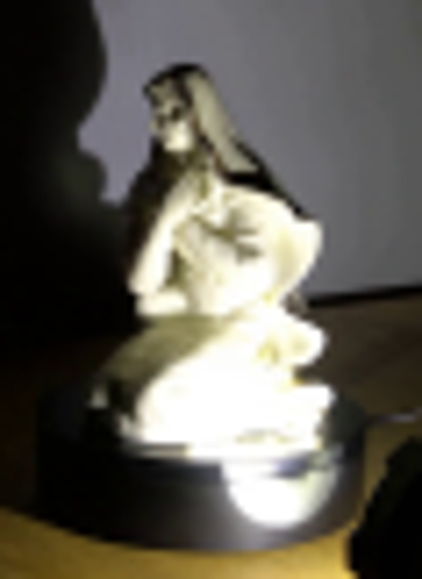
视觉工具实际返回图片 3
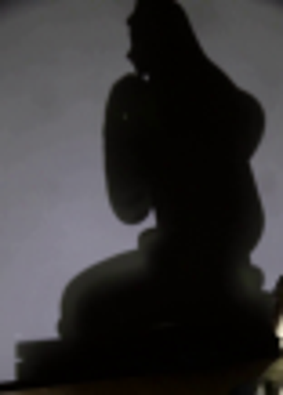
视觉工具实际返回图片 4
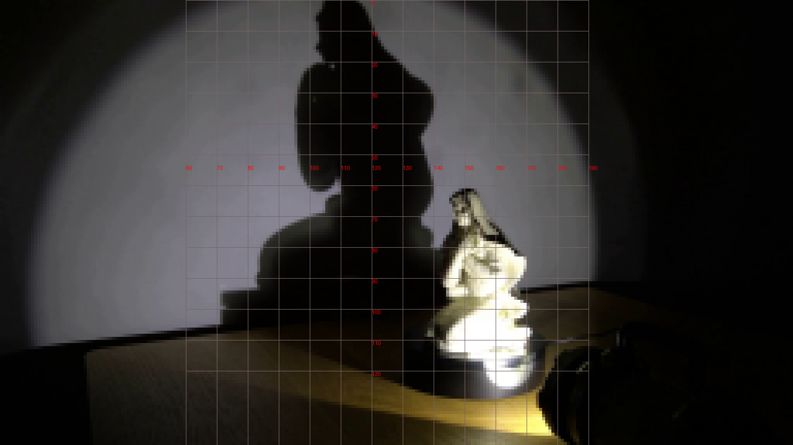
视觉工具实际返回图片 5
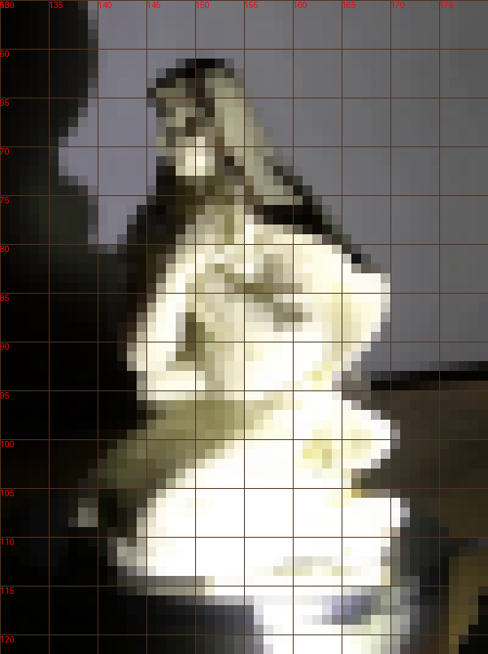
视觉工具实际返回图片 6
视觉工具实际返回图片 7
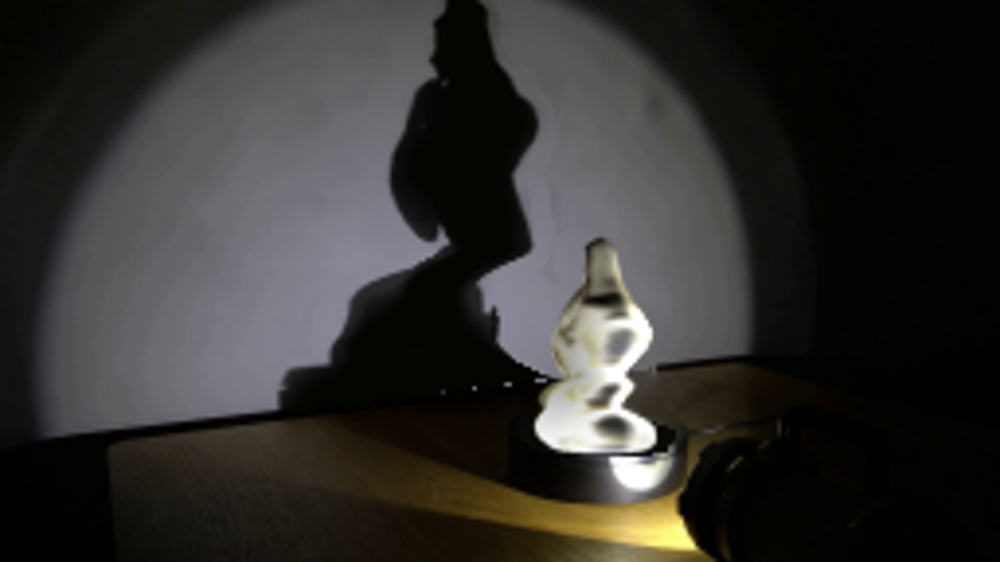
视觉工具实际返回图片 8
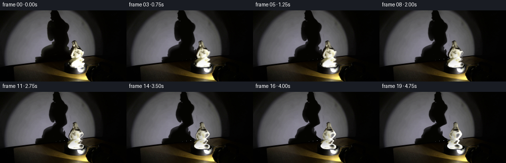
视觉工具实际返回图片 9
视觉工具实际返回图片 10
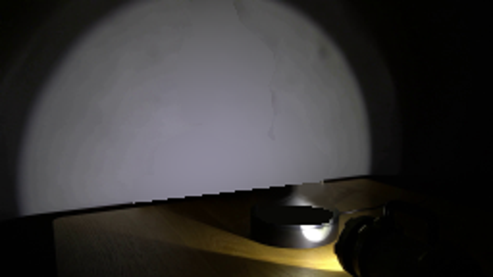
视觉工具实际返回图片 11
视觉工具实际返回图片 12
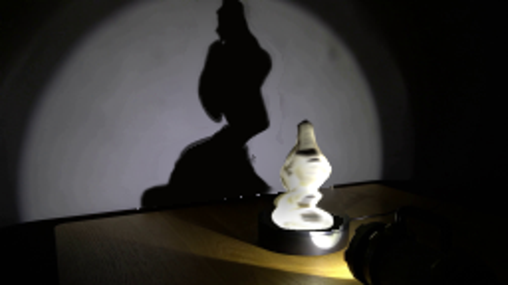
视觉工具实际返回图片 13
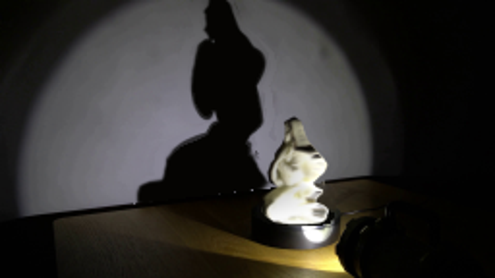
视觉工具实际返回图片 14
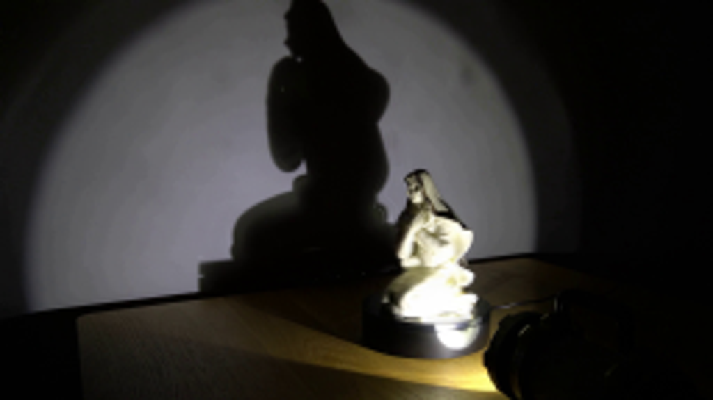
视觉工具实际返回图片 15
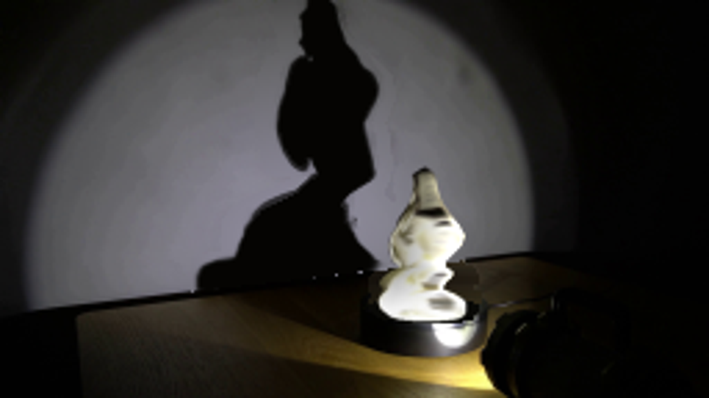
保存候选 5 份；完成命令 11 次；可验证图片返回 15 张。原始 API 响应与完整日志保留在本地。